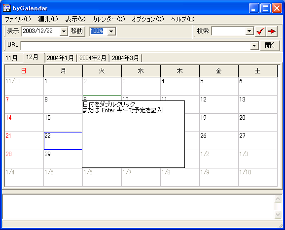
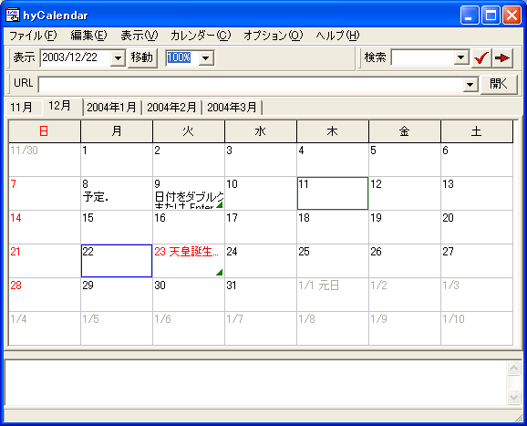
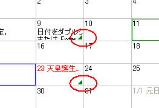
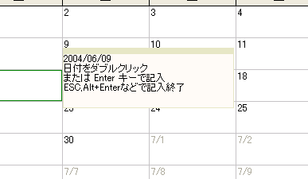

日付メモは，各日付ごとに設定される，予定の基本の単位です．
[日付メモの操作] [文字列のはみ出しとポップアップ] [装飾文字列]
日付ごとの予定を記入するためには， 日付をダブルクリックするか， あるいは目的の日付を選択した状態で Enter キーを押下します． すると，予定記入用の作業エリアが開きます．
日付ごとの予定を記入し終えたら， その作業エリア以外をマウスでクリックするか， ALT + Enter キー，あるいは ESC キーを押下することで編集を終了します．
日付メモの内容は 自動ハイパーリンクの対象です．
ウィンドウサイズが小さい場合， 記入した予定や，祝日の名前が枠からはみ出してしまうことがあります． このとき，右下に小さな三角形のマークが表示されます． このマークの色も変更できます．
文字列のはみ出しを避けるために，端でできるだけ折り返す設定が可能です． 設定すると，日付の名前および期間予定以外の文字列が日付枠からはみ出したとき， 自動で折り返し（改行）されて表示されるようになります． 下側にはみ出した場合は，やはりはみ出し表示のマークが描画されます．
このマークが付いた日にマウスカーソルを重ねると， その内容がポップアップ表示されます． ポップアップを禁止したい場合は[ハイパーリンク表示]タブから設定を変更します．
ポップアップ表示された内容にアクセスしたい（範囲選択やハイパーリンクを使いたい）場合は， ウィンドウをクリックすると，表示状態のまま維持しておくことができます．
日付メモに対しては，特定の文字列を記入することによる装飾が可能です．
"|"(あるいは設定ダイアログで指定した１文字)によって，色の名前，あるいは
ユーザ定義の装飾文字列を
括ることで指定することができます．例を以下に示します．
| 入力 | 表示 |
|---|---|
|青|テスト | テスト |
|red|大文字と小文字は区別しません | 大文字と小文字は区別しません |
|green|行の途中で|navy|色を変えることもできます． | 行の途中で色を変えることもできます． |
装飾文字列の有効範囲は，次の装飾文字列が出現するか，行の終わりまで到達するかです．
詳しくは，装飾文字列の使い方を参照してください．